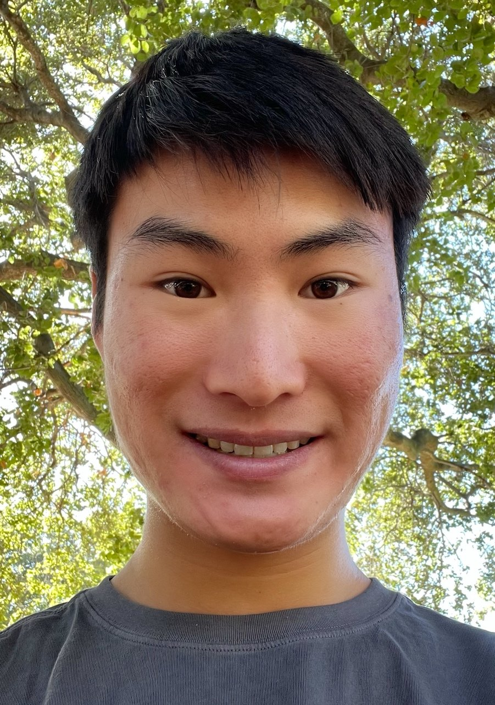

Effective Altruism at UChicago
UChicago Effective Altruism (UChicago EA) is a group of UChicago undergrads, grads, and professional students dedicated to using reason and evidence to tackle the world’s most pressing problems. We are a community that empowers and supports each other in our pursuits to most effectively help others. Through regular reading and discussion meetups, skill-building workshops, social events, global networking opportunities, career coaching, academic advice, and more, UChicago EA provides students with resources and tools to help them do incredible amounts of good for the world.
Executive

Noah Birnbaum
Assistant Director
Noah is a third-year from Long Island, NY, studying philosophy and cognitive science. He’s curious about a wide range of topics, so feel free to chat him up! Right now, his main interests include metaethics (especially as it relates to normative ethics), global priorities research, cause prioritization, decision theory and formal epistemology, and digital consciousness.
Outside of academics, Noah enjoys blogging (link here), (mostly non-fiction) reading, and (mostly urban) backpacking (fun fact: he’s been to 36 countries).
He loves meeting and talking to new people—feel free to reach out at dnbirnbaum@uchicago.edu

Avik Garg
Assistant Director
Avik is a second-year from Eden Prairie, Minnesota. He is majoring in economics and computational and applied math. He’s particularly interested in global development and AI X-risk. His hobbies include reading history and playing go.

Jack Kozlowski
Jack is a rising 3rd-year from Denver, CO, studying data science and philosophy. He is interested in AI safety, applied ethics, and practical rationality. His hobbies include running, cooking, and playing (mostly jazz) piano. Feel free to reach out to him at jkozlowski@uchicago.edu!

Madeleine Hoffman
Madeleine is a second year from Northbrook, Illinois, studying Economics and Cognitive Science and especially interested in global health, animal welfare, and AI safety. She aspires to improve decision-making systems and create spaces for open and thoughtful conversations. Please reach out at mnhoffman@uchicago.edu, she’d love to chat with you!

Isabella Duan (she/her)
X-Risk Initiative Lead
Isabella is a master’s student in computational social sciences. She’s excited to learn more about cooperative AI in a less abstract sense and methodologies of studying existential risks. She was a summer research fellow at Stanford Existential Risk Institute, where she considered how prediction technologies could transform the risks of war. She was also a Tianxia Academy Fellow and a Laidlaw Scholar. She has a BSc in philosophy and politics from University College London.
Contact her at isabelladuan@uchicago.edu.

Leonard Li (he/him)
Newsletter Lead
Leonard is an exchange student from the University of Hong Kong. He studies philosophy, with a focus on ethics and political philosophy. He is interested in EA-meta, population ethics, effective philanthropy and various other topics in EA. Before coming to UChicago, Leonard was one of the executive members of Effective Altruism Hong Kong.
Contact him at leonardly@uchicago.edu.

Miranda Zhang
Miranda (she/hers) graduated in 2022 with a degree in Public Policy. She was President of UChicago EA from 2021-2022 and is now an Operations Generalist at Anthropic. Miranda is most interested in s-risks, suffering-focused ethics, and meta-EA.

Parker Whitfill
Parker (he/him) graduated from the University of Chicago in 2021 studying economics. He is now a research assistant for James Robinson at the University of Chicago and is now an Economics PhD at MIT. Parker helped run the EA group in previous years.

Cheryl Wu
Cheryl (she/her) was the treasurer for UChicago EA before she graduated in 2021. She is now a predoc at Harvard Business School and is looking forward to getting a PhD in economics. Cheryl is particularly interested in studying political economy and autocratic governments.

Andrew Kao
Andrew (he/they) was predoctoral fellow working with Professor David Yang at Harvard’s economics department and an affiliate at Evidence for Policy. They are now a PhD student in Economics at Harvard. His current research interests include political economy and development. Andrew graduated from the University of Chicago in 2020 with a BS in computational and applied math and a BA in economics.

Anand Shah
Anand (he/him) graduated from the University of Chicago in 2021, where he studied math and economics. He was a research professional at Chicago Booth with Eric Budish and Jacob Leshno and is now a PhD student at MIT Sloan. Anand likes learning about market design and Indian philosophy, has a penchant for wacky physics facts, and would love to hear more about all things EA.
Contact Anand via Facebook.

Tony Zeng
Tony (he/him) is a PhD student at Stanford, studying genetics. He is interested in improving the productivity of scientific research, incentivizing investment into under-prioritized research areas, and aging and neurodegenerative diseases.

James Hu
James (he/him) was the webmaster for UChicago EA before he graduated in 2022 with a bachelor‘s degree in environmental science. He was later a research assistant at Rethink Priorities before becoming a Program Associate at Open Philanthropy.